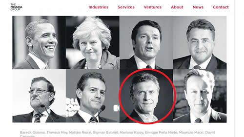

Real Chubut - Agencia de Noticias


La inserción en el mundo según Cambiemos

La página web de la consultora Messina Group, pionera mundial en el uso de Big Data para campañas electorales, destaca el asesoramiento al presidente argentino entre ocho mandatarios. El Gobierno lo niega aunque el vínculo con el grupo está probado.
Jim Messina, el gurú del robo de información de Facebook, asesora al presidente argentino. Lo dice él mismo en la página web de su consultora, el Messina Group. “(Messina) asesora a Presidentes y Primeros Ministros en cinco continentes incluyendo a Theresa May y David Cameron de Reino Unido, Enrique Peña Nieto de México, Mauricio Macri de Argentina, Matteo Renzi de Italia y en 2016 ayudó a Mariano Rajoy de España a ganar una sorprendente segunda vuelta,” informa el currículum del gurú. “(Messina) cuenta con la confianza de los líderes mundiales” señala la misma página de Messina Group, en un apartado llamado “Política”. A continuación aparecen ocho fotos, incluyendo la del presidente argentino. “Barack Obama, Theresa May, Matteo Renzi, Sigmar Gabriel, Mariano Rajoy, Enrique Peña Nieto, Mauricio Macri, David Cameron,” reza el epígrafe. Messina se hizo conocido por ser el cerebro detrás de la reelección de Obama en el 2012. La semana pasada el consultor político estrella nacido en Denver, Colorado, en 1969 y ex vicejefe de Gabinete de Obama volvió a las primeras planas pero esta vez los titulares no fueron tan elogiosos. Resulta que Messina es el mayor experto mundial y pionero en la utilización politico-electoral de información extraída de diversas bases de datos y contenidos de redes sociales, sobre todo Facebook, sin el consentimiento o verdadero conocimiento de al menos buena parte de los usuarios afectados.
Y justo la semana pasada estalló un escándalo mundial porque se descubrió que una empresa llamada Cambridge Analytica había robado información de 50 millones de perfiles de Facebook para ayudar a la campaña de Trump,
Entonces Messina tuvo que salir a aclarar que la información que él había sustraído de Facebook y afines para sus campañas no lo había hecho a espaldas de Facebook. “Cambridge Analytica obtuvo su data de manera fraudulenta, lavada a través de un investigador a quien le pagaron para que instale una app. En la campaña del ’12 les dijimos a los votantes qué estábamos compartiendo y con qué propósito. Equiparar los dos casos es engañoso,” Messina tuiteó el jueves.
Lo de Messina fue una sutileza. Lo que había hecho en 2012 era crear un app que bajaron en Facebook un millón de simpatizantes de Obama para permitir que Messina tenga acceso a información de los amigos de los usuarios de la app. Y nadie les avisaba a los amigos que les estaban extrayendo información a través de sus “amigos” de Facebook. Con eso se creó una gigantesca base de datos con información privada de casi el país entero. De ahí se identificaron 16 millones de votantes indecisos y se los inundó con publicidad basada en sus preferencias individuales, muchas veces con sus propios amigos como referencias o recomendadores. Entonces de repente en medio de la campaña empezaron a aparecer avisos moldeados específicamente para coincidir con los gustos y caracterísitcas de esos amigos, como si fuera una milagrosa coincidencia entre lo que el candidato piensa y lo que su “amigo” de Facebook quería oir.
Pero claro, este abuso de amigos de amigos de amigos de activistas inescrupulosos ya es historia conocida. Tanto que Facebook cambió sus reglas en 2015 para no permitir el robo de datos a traves de apps de “amigos”, tanto para fines comerciales como para fines políticos. Pero para entonces el Messina Group ya tenía toda la información que necesitaba. Por eso el intento de Messina de despegarse del escándalo despertó un vendaval de críticas.
Por caso las de Patrick Ruffini, cofundador de la firma de análisis digital Echelon Insights. Citado por el diario USA Today, opina que el error de los asesores de Trump fue no haber hecho su minería de datos antes de que Facebook cambie las reglas en 2015. Y que, en esencia, la única diferencia entre Messina Group y Cambridge Analytica, es que éstos últimos llegaron tarde al negocio y por eso los agarraron.
“No es como si hubiera habido algún tipo de violación donde algún tipo de data secreta fue lanzada a la atmósfera por primera vez. La información que ellos (Cambridge Analytica) tenían no era muy distinta a la que tenía la campaña de Obama en su base de datos,” señaló Ruffini.
- - -
Messina se jacta de su vínculo con Macri, pero hasta cierto punto. La página de su empresa no da mayores detalles sobre el asesoramiento que dice que le provee al presidente argentino y un cuestionario enviado por este cronista el miércoles a la consultora no obtuvo respuesta. Mientras tanto fuentes de la Casa Rosada con conocimiento directo del tema niegan que ese vínculo exista. “Messina y el Messina Group no tienen ninguna relación ni con el presidente, ni con el gobierno, ni con el partido,” afirmó una de esas fuentes. Sin embargo esas mismas fuentes confirman que el 30 de marzo de 2016 el jefe de Gabinete Marcos Peña y el secretario de Comunicación Pública Jorge Grecco se reunieron en Buenos Aires con el vicepresidente del Messina Group, Brennan Billberry, tal como informara en su momento la revista Veintitrés. Las fuentes también confirmaron que existe “una relación personal, de amistad” entre Messina y Braun, tal como informara hace dos años el columnista Carlos Pagni en el diario La Nación. A su vez varios medios internacionales han informado que fue Messina quien apadrinó la llegada a la Argentina del último embajador de Obama, Noah Mamet, el mismo que luego de ser reemplazado por Trump y de haber renunciado al servicio diplomático volvió a Buenos Aires para instalar su consultora y empezar a trabajar, según contó en entrevistas recientes, con al menos tres áreas del gobierno nacional, aunque no mencionó el Big Data y la consultoría política cuando le preguntaron por los mercados que más le interesan.
Según las fuentes de la Rosada, durante el encuentro entre el número dos de Macri y el numero dos de Messina, en ningún momento Billberry ofreció los servicios de su consultora ni Peña se los pidió. Ni siquiera hablaron de la situación política en Argentina sino de acontecimientos recientes en Estados Unidos, dijeron esas fuentes. Al ser preguntado por qué Messina incluiría a Macri en su página web entre los jefes de Estado que asesora si no fuera cierto, una fuente de la Casa Rosada sugirió que quizás el Messina Group estaba vendiendo humo para promocionarse. Pero el gurú de Obama probadamente asesoró a Cameron, May, Rajoy y Renzi, a tal punto que se conocen cifras de cuánto se le habría pagado por cada campaña, aunque muchos dicen que en ese rubro la subfacturacón y los pagos en negro vía empresas offshore están a la orden del día. Por ejemplo, medios europeos informaron que Messina Group cobró 400,000 euros por la campaña para la reforma constitucional de Renzi, que Renzi perdió 2016 ; “unos 100,000 euros” en la campaña de Rajoy, “solo para comprar avisos de Facebook” en 2015, y 560,000 euros para la campaña que May terminó perdiendo las elecciones del 2016. En cambio el caso del presidente mexicano es similar al del argentino: Messina dice que asesoró a Peña Nieto pero la prensa mexicana aún no se ha dado por enterada.
- - -
En todo caso el interés en la relación entre Macri y Messina no es nuevo. El 8 de diciembre de 2016 este cronista recibió un mail de un colega que trabaja en un prestigioso medio británico que a la postre hizo punta con la historia de Cambridge Analytica. El colega preguntaba por Messina, a quien le adjudicaba haber colaborado con el triunfo de Macri sobre Scioli en el 2015. En ese momento Macri ya figuraba en la página web del Messina Group, que había sido fundado en el 2013. Macri, Cameron y Rajoy eran los únicos mencionados como beneficiarios de los consejos de Messina.
El colega buscaba información en España y Argentina porque la prensa británica había destapado un gigantesco fraude en la campaña de Cameron que Messina había dirigido. El fraude consistió en detectar a traves de big data los distritos clave que los conservadores necesitaban ganar e inundar esos distritos con toda clase de publicidades y caravanas de voluntarios, con lo cual excedían por mucho los topes de gastos electorales para sus candidatos en distritos marginales. Al principio esos gastos extra no fueron reportados por la campaña que comandaba Messina y entonces estalló el escándalo. A medida que fueron creciendo las revelaciones de los medios británicos, trece departamentos de policía de distintos distritos electorales abrieron investigaciones criminales en contra de 28 parlamentarios conservadores. La campaña de Cameron que asesoraba Messina entonces dijo que había cometido un error y que había anotado esos gastos como parte de la “campaña nacional” (aunque el dinero se había usado para apuntalar a candidatos locales) y presentó tardíamente la documentación correspondiente. De acuerdo con la ley electoral británica los departamentos policiales informaron los resultados de sus investigaciones a la comisión electoral británica y el año pasado la comisión cerró la causa sin imputaciones penales pero aclaró en un comunicado que el fraude existió, aunque no se haya podido comprobar que fue hecho a propósito por los parlamentarios acusados. Pero eso no es todo.
Según el colega británico, en las elecciones de ese año se habrían violado leyes británicas y estadounidenses de protección de datos a través de la compra de datos comerciales y el uso de pseudo encuestas de supuestas consultoras que en realidad eran mecanismos ocultos de recolección de datos, comprando información comercial acerca de los votantes y usando oscuras consultoras de mercado para juntar información de votantes sin decir para qué se trata. “Estas técnicas fueron instigadas en Gran Bretaña por Messina, el ex jefe de campaña de Obama, que fue pionero del análisis de Big Data en Estados unidos”, escribió el colega británico.
A pesar de que se sabe mucho más acerca de las actividades del Messina Group en Gran Bretaña que en Argentina, igualmente el colega británico opinó que durante la campaña de Cameron el grupo se manejó de manera opaca y al filo de la ley. En Gran Bretaña, la consultora de Messina habría operado a través de la compañía llamada Messina Quantitative Research, y de otra con el nombre de GB Quantitative Research. Ambas estarían registradas en el paraíso fiscal del estado de Delaware, en Estados Unidos. Aunque tuvo un rol enorme en la elección del 2015, el Partido conservador sólo declaró un pequeño pago a Messina en su informe de gastos. Siempre según la fuente británica, la minería de datos que llevó adelante MQR en esa campaña del 2015 costó millones de dólares.
- - -
En el intercambio de información entre Argentina y Reino Unido un dato captó el interés del colega británico: en junio de 2016, cerca de tres meses después de la reunión de Marcos Peña con el vice del Messina Group, Macri firmó un decreto transfiriendo la información privada recopilada por la ANSES a la esfera de la Jefatura de Gabinete para ser usada en campañas de información pública. Ese decreto fue desafiado con presentaciones judiciales por legisladores opositores que lo consideraban violatorio del derecho a la intimidad, del derecho al hábeas data, y de la legislación argentina acerca de protección de datos. Las causas por ahora no han prosperado.
“Las técnicas analíticas del Messina Group sólo funcionan si ellos tienen acceso a grandes cantidades de datos personales”, advierte el colega británico. Si bien en los Estados Unidos existe una tradición comercial y legal que hace que la venta de bases de datos sea accesible, en Europa y Argentina, la legislacion vigente proteje a la información privada de las personas con leyes mucho más duras que dificultan la obtención de esos datos. En cuanto al uso que de esa información puede o no hacer el Estado el límite parece ser más difuso.
Esta semana, horas después de que estallara el escándalo de Cambridge Analytica, el Boletín Oficial anunció que, bajo la órbita de Marcos Peña, el gobierno había creado una Unidad Especial Ejecutora Temporaria para el manejo de Big Data. La dependencia, llamada Unidad de Opinión Pública, tiene como directora a la licenciada Mora Jozami, una persona muy cercana a Peña. Según su perfil de LinkedIn, Jozami fue asesora de Peña en la legislatura porteña entre 2003 y 2007. A juzgar por sus antecedentes, si bien venía de ocupar en el gobierno porteño el mismo cargo que tiene ahora , no se trata de una funcionaria de carrera ni de una especialista en el área sensible de la protección de datos. Su experiencia más bien aparece ligada a actividades proselitistas: antes de asesorar a Peña había sido “responsable del área de Opinión Pública de Compromiso para el Cambio/Pro entre el 2001 y el 2002”, dice en LinkedIn, el sitio de relaciones laborales. Una crónica del triunfo macrista del 2015 aparecida en el sitio “Opinión Ciudadana” el día después de la elección aporta otro detalle sobre las actividades partidarias de Jozami: en esa votación ella “fue la encargada de coordinar las 1900 mesas testigo del Pro” y en la noche de la elección Jozami “fatigó los salones” del cuartel de campaña en el complejo Costa Salguero.
El miércoles pasado este cronista se puso en contacto con Jozami a través de la red social Twitter y ese mismo día le envió un cuestionario preguntando acerca de qué estaban haciendo con los datos de la ANSES, qué medidas estaban tomando para asegurarse que los datos recolectados o almacenados en su dependencia no sean utilizados con fines electoralistas y si había tenido algún contacto con Messina, el Messina Group, la gente de Cambridge Analytica o cualquier consultora argentina o extranjera especializada en minería de datos de redes sociales. Con respecto a esto último Jozami coincidió, en sintonía con las fuentes de la Casa Rosada, que ella no tuvo contacto con esas empresas.
Fuente: Pagina 12